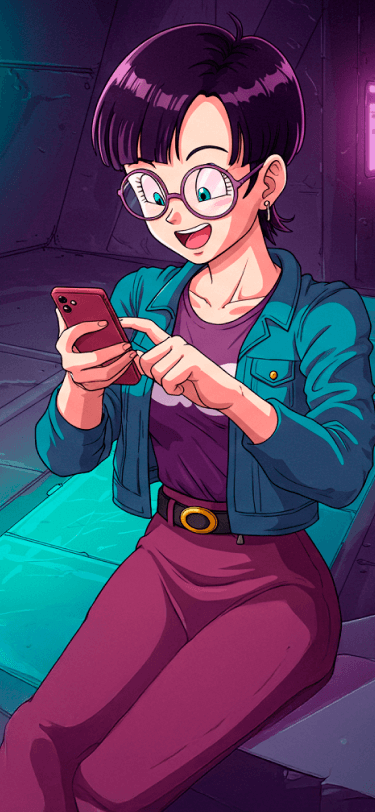

Cyberstorm
Kael Takeda, conhecido no submundo digital como "Cyberstorm". Um saiyajin que foi enviado e criado em um planeta onde a tecnologia reina depois da explosão do Planeta Vegeta. Depois de alguns anos aprendendo sobre computação fora do seu planeta, se tornou mestre na arte da criação de programas, IA e robôs avançados para ajudar seus amigos a manter seu novo lar mais seguro.

Codepixie
Lía Nakamura,conhecida como "Codepixie", é uma programadora genial da raça humana criada em um planeta chamado "Bigdriu". Lía foi abduzida quando era uma criança e vendida como escrava para mercenários hackers deste planeta. Aprendeu boa parte de analise, desenvolvimento e como hacker mas fugiu desta vida do crime para se dedicar em ajudar a pessoas.

Codebreaker
No coração de uma espaçonave, Orion Vex, conhecido como "Codebreake", era um ex-engenheiro cibernético que, após desertar do Exercíto Freeza, viajou até Bigdriu para começar uma nova carreira. Começou a aprender sobre tecnologia e com seu intelecto avançado, se tornou engenheiro chefe da família real. Após servir por 7 anos, decidiu sair pela galáxia em busca de aperfeiçoar seu conehcimento.

Hexblade
Ryo Tanaka, mais conhecido como "Hexblade", nascido da união de um humano com uma bigdriana foi algo inucitado juntando inteligência com a tecnologia. Com seu intelecto incomparável, Ryo é um hacker nato que usa suas habilidades para ajudar aqueles que tem seus dados violados ou roubados afim de melhorar a segurança cibernética dos programas.

Neonpulse
Neonpulse Ayla Vega, apelidada de "Neonpulse", é uma prodígio da programação com muito talento para melhorar suas habilidades. Após perder seus pais em uma tragédia no edifício Rubrens de Bigdriu, dedicou-se sozinha a melhorar suas habilidades em programação e criação de uma inteligência artificial capaz de sentir emoções.